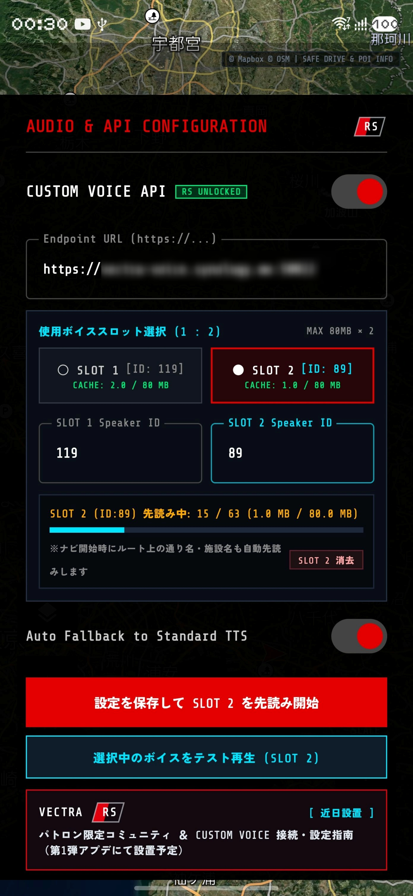
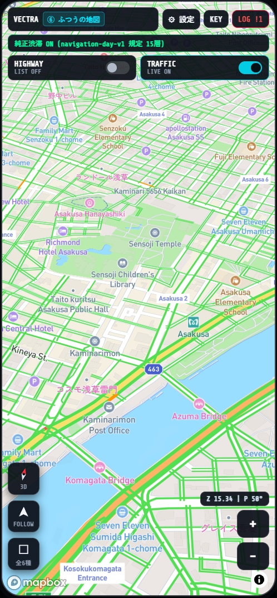
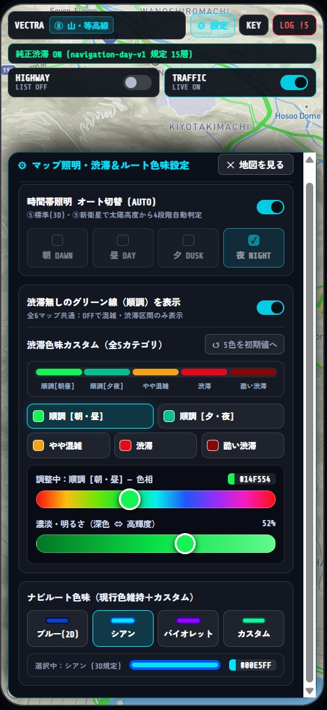

VECTRA
目的地設定ゼロで首都高C1・湾岸線・全国58路線系統の今と先を射抜く「走り屋モード」搭載。
v6.0では確定6種マップ・全プラン対応TRAFFIC渋滞表示・太陽高度4段階照明・渋滞5色＆2D/3Dルート色カスタムを新搭載し、最上位 VECTRA RS では160MBゼロ遅延プリロード音声エンジンを解放。
Equipped with destination-free "Runner's Mode" across 58 nationwide expressway systems.
v6.0 introduces 6 Tactical Map Styles, Universal TRAFFIC Overlays, Offline Solar 4-Stage Lighting & Full Color Customizer—while top-tier VECTRA RS unlocks the 160MB Zero-Latency Voice Engine.
SYSTEM AUTH & 3-TIER LICENSE
ログイン認証とFREE / PRO / VECTRA RS ライセンス仕様
起動画面（首都高C1背景）の下部にある Sign in with Google ボタンからご自身のGoogleアカウントでログインしてください（タイトル画面上の [ EN | JP ] トグルから表示言語を即座に切り替え可能です）。
一度ログインすると端末内に認証情報が記憶され、次回からは「LAUNCH VECTRA」の1タップのみで即座にメインHUDへ突入します。アプリの上書きアップデートや再インストールを行った場合も、当月の利用枠が自動的に引き継がれます。
Sign in with your Google account using the Sign in with Google button on the title screen (you can switch the display language anytime via the [ EN | JP ] toggle).
Once authenticated, your credentials are saved locally so you can jump straight into the main HUD with a single tap on "LAUNCH VECTRA" next time. Your monthly quota is automatically preserved across app updates or reinstallations.
| 機能カテゴリー FEATURE CATEGORY | FREE (¥0) | PRO (¥300 / mo) | VECTRA RS (¥500 / mo) | リセット周期・備考 RESET CYCLE & NOTES |
|---|---|---|---|---|
| 走り屋モード（非ナビ全国58路線 IC / SA / PA / JCT ＆ スタバ43施設・44店舗捕捉） Runner's Mode (Free-Drive 58 Expressways & 43 Starbucks SA/PA Radar) | 月間 6 回 (ナビ共通) 6 uses / mo (Shared) | 月間 100 回 (ナビ共通) 100 uses / mo (Shared) | 月間 100 回 (ナビ共通) 100 uses / mo (Shared) | 毎月1日リセット（ルートナビと共通枠／高速本線ロック確定で1回消費・一般道での自動OFFは消費なし・手動OFF時5秒確認ガード付） Resets 1st of month (Shared with Route Nav / 1 quota on mainline lock-on / 0 quota if auto-OFF on local streets / 5s OFF-guard) |
| ルートナビゲーション案内（マルチ高速［IN］/［OUT］特定＆3Dオートズーム連動） Turn-by-Turn Route Nav (Multi-Hwy [IN]/[OUT] & 3D Auto-Zoom) | 月間 6 回 (高速共通) 6 runs / mo (Shared) | 月間 100 回 (高速共通) 100 runs / mo (Shared) | 月間 100 回 (高速共通) 100 runs / mo (Shared) | 毎月1日リセット（ルート確定時に1回消費・ナビ中の高速リストやTRAFFIC切替は追加消費なし・300m近距離ガード・40m自動到着終了） Resets 1st of month (1 quota on route start / 0 extra quota for Hwy or TRAFFIC toggles / 300m nearby guard & 40m auto-arrival) |
| 高精度 目的地キーワード検索 Destination Keyword Search | 月間 6 回まで 6 searches / mo | 月間 100 回まで 100 searches / mo | 月間 100 回まで 100 searches / mo | 毎月1日リセット（※検索枠終了後も月間枠内ならマップ長押しピン留めナビ利用可／U字タブ3拠点も検索消費ゼロ） Resets 1st of month (Map long-press pin nav remains available within quota; Quick Pins use 0 search quota) |
| メイン『TRAFFIC』純正渋滞表示 ＆ 時間帯照明・渋滞5色・ルート色カスタム Main "TRAFFIC" Switch, Solar 4-Stage Lighting & Color Customizer | フル解放 UNLOCKED | フル解放 UNLOCKED | フル解放 UNLOCKED | v6.0新搭載！全プランでリアルタイム渋滞ON/OFF・順調緑線非表示・太陽高度4段階照明・渋滞5色＆2D/3D独立ルート色変更が可能 New in v6.0! Live traffic toggle, smooth-line filter, offline solar lighting & full 5-traffic / 2D-3D route colors unlocked for all tiers |
| 確定6種タクティカル・マップ切替 ＆ 3Dモード（HD車線道路） Curated 6 Tactical Map Styles & 3D Mode (HD Roads) | ⑥ふつう ＋ ⑤標準3D(3D時) Streets + Standard 3D | 全 6種 フル解放 All 6 Styles | 全 6種 フル解放 All 6 Styles | FREEも3DモードON時は⑤標準(3D)＋▲長押しアングル自由追従に対応。PRO/RSは山・ナビ昼夜・新衛星を含む全6種巡回切替可（詳細は05） FREE supports 3D Mode (Standard 3D) + Hold-▲ Free Angle; PRO/RS unlock all 6 styles including Outdoors, Nav Day/Night & Satellite+Roads |
| U字タブ お気に入り3拠点（[Home] / [Favorite1] / [Favorite2]） Pull-Tab 3 Quick Pins ([Home] / [Favorite1] / [Favorite2]) | LOCKED [PRO / RS] | フル解放 UNLOCKED | フル解放 UNLOCKED | 検索枠を消費せず左端U字プルタブから1タップでルート案内開始 1-tap route launch from the left-edge pull-tab without consuming search quota |
| CUSTOM VOICE（SLOT 1:2 デュアル音声・160MB先読み・RSコミュニティ） CUSTOM VOICE (SLOT 1:2 Dual Voice, 160MB Preloader & RS Portal) | LOCKED [RS限定] | LOCKED [RS限定] | RS PATRON UNLOCKED | 2話者ID保持・80MB×2先読み・ルート通り名自動プリロード・接続指南ポータル解放（詳細はセクション03） Dual Speaker IDs, 80MB×2 Preloader, Route Street Pre-Caching & RS Setup Portal (See Sec 03) |
RUNNER'S MODE // SHUTOKO & HIGHWAY HUD
目的地不要の「走り屋モード」＆ 全国58路線マスターDB
1. 画面右側の ROUTE HGWY スイッチが左側（HGWY）になっていることを確認します（すぐ下の TRAFFIC スイッチで渋滞線のON/OFFも個別に切替可能）。
2. 目的地を設定しないまま高速道路・都市高速の本線（75mコリドー内）に乗り、HIGHWAY MODE をONにするだけで「走り屋モード」が起動！前方施設リストが確定した時点で月間利用枠を1回消費し、直近3施設を下から上へ積み上げ表示します（一般道での誤ONは枠消費ゼロで自動OFF／手動OFF時は5秒カウントダウン確認ガード付）。
※右側のプレビューで「東名高速（海老名SA：スタバ＆GAS表示）」と「首都高 C1/湾岸（大黒PA：P/WC表示）」、および「日本語 ⇔ 英語表記」を実際に切り替えて比較できます。
1. Ensure ROUTE HGWY on the right side is set to HGWY (you can also toggle live congestion anytime via the TRAFFIC switch directly below).
2. Enter any expressway mainline (within 75m corridor) with zero destination set and flip HIGHWAY MODE ON. Runner's Mode consumes 1 monthly shared quota once upcoming facilities lock on and stacks the next 3 nodes from bottom to top (0 quota used if auto-OFF on local streets / 5-sec manual OFF guard included).
* Use the interactive preview on the right to compare "Tomei Expwy (Ebina SA: Starbucks & GAS)" vs. "Shutoko C1/Bayshore (Daikoku PA: P/WC)" and toggle between JA / EN labels.
ナイトドライブや長距離ツーリングのコーヒーブレイクを逃さない確定マスター辞書を搭載！
スターバックスが実在する全国の高速SA・PA 全43施設・44店舗（上下線両側＆集約型の海ほたるPA・湾岸幕張PA上下・守谷SA上下・足柄SA上下・談合坂SA上下・浜名湖SA［2店舗］・NEOPASA岡崎・御在所SA上下・多賀SA上下・三木SA上下に加え、片側出店の海老名SA上り・都筑PA上り・蓮田SA上り・酒々井PA下り・羽生PA下り・富士川SA下り・淡路SA下り等）を上下線別に完全ハードコード収録。進行方向側で利用可能な施設のみに
STARBUCKS
バッジを自動点灯します（視認性最優先で GAS タグとスタババッジを優先表示）。
Never miss a coffee break on night runs or grand touring!
VECTRA's hardcoded master dictionary covers all 43 expressway SA/PAs (44 Starbucks stores) nationwide—strictly distinguishing Inbound-only and Outbound-only locations (such as Ebina SA Inbound, Tsuzuki PA Inbound, Hasuda SA Inbound, Shisui PA Outbound, Fujikawa SA Outbound, Awaji SA Outbound, plus dual/consolidated hubs like Umihotaru PA, Ashigara SA, Hamanako SA, and Okazaki SA) to light up the
STARBUCKS
neon badge alongside critical GAS fuel tags!
※記載されている店舗名・ブランド名は各社の商標または登録商標であり、本アプリでは施設案内（POI情報）の目的でのみ表示しています。各企業との提携・協賛関係を示すものではありません。
*All store names and brand names mentioned or displayed are trademarks or registered trademarks of their respective owners, and are shown strictly for Point of Interest (POI) informational purposes. Their use does not imply any affiliation or endorsement.
VECTRA RS // TACTICAL VOICE ENGINE
RSパトロン限定：デュアルスロット音声連携 ＆ 160MB先読みエンジン
高速道路のJCT分岐やレーンキープが連続するシーンにおいて、発話のたびに外部サーバーへ通信して数秒待たされるリアルタイム音声合成は実用になりません。
最上位グレード 『VECTRA RS（月額500円）』 のために専用設計された TACTICAL VOICE ENGINE は、プライベートHTTPS音声合成エンドポイントと直結し、2種類の話者ID（SLOT 1 / SLOT 2）の常時保管・ワンタップ切替、最大160MB（80MB × 2スロット）の2段階バックグラウンド先読み機構、およびRSパトロン限定コミュニティ＆接続指南ポータルを解放します。
On high-speed expressways with rapid junction splits, waiting several seconds for on-the-fly network TTS synthesis is unacceptable.
Exclusively engineered for our top-tier "VECTRA RS (¥500/mo)" edition, the TACTICAL VOICE ENGINE links directly to your private HTTPS neural TTS endpoint—unlocking instant Dual-Slot (SLOT 1 / SLOT 2) speaker switching, a 160MB (80MB × 2 slots) two-stage background preloader, and the Exclusive RS Patron Community & Setup Portal.

01 // デュアルスロット（SLOT 1 : 2）コックピット瞬時切替
01 // Dual-Slot (SLOT 1 : 2) Instant Cockpit Switching
2つの異なる Speaker ID を常時ペア保管。SLOT 1 と SLOT 2 のトグルをタップするだけで、キャッシュを消すことなく瞬時にコックピットの相棒を切り替えられます。
Store two distinct Speaker IDs side-by-side and toggle between SLOT 1 and SLOT 2 with a single tap without losing cached audio.
02 // 保存ボタン連動「基本定型句ピン留めプリロード（80MB × 2）」
02 // One-Tap Static Phrase Preloading & Pinned Storage (80MB × 2)
「設定を保存して先読み開始」ボタンを押した瞬間、ナビ基本定型句（距離案内・左右分岐・JCT/SA/PA・スタバ通知等）をバックグラウンドで一括ダウンロードし、アプリ専用領域（各80MB・計160MB）へピン留め保護します。
Tapping "SAVE & PRELOAD VOICE" permanently saves your Endpoint URL and Speaker IDs while sequentially downloading core navigation phrases into protected storage (80MB × 2).
03 // ナビ開始時の「全ルート通り名・IC/JCT・SA/PA」動的先読み
03 // Dynamic Route-Ahead Street & Junction Pre-Caching
ルート確定と同時に出発地から終点までの全ステップの通り名・IC出口・SA/PA名称を自動抽出して裏側で先読み蓄積。山手トンネルやアクアラインなどの長大な地下トンネル（電波圏外）でもカスタム音声が一切途切れません。
Proactively synthesizes upcoming street names, junction exits, and SA/PA alerts upon route start—ensuring uninterrupted custom voice playback even inside deep underground tunnels.
04 // HTTPS完全暗号化・標準TTS自動フォールバック ＆ RS専用ポータル
04 // Strict HTTPS, Smart TTS Fallback & Exclusive RS Portal
通信はすべて https:// 暗号化に準拠し、通信不能時もOS標準TTSへ自動フォールバック。設定画面内の専用ボタンから VECTRA RS 接続・設定指南ポータル へ直接アクセスできます。
Enforces strict https:// encryption with seamless OS TTS fallback, plus direct in-app access to the VECTRA RS Exclusive Community & Setup Guide Portal.
6 TACTICAL MAPS, LIVE TRAFFIC & COLOR
確定6種マップ実機ギャラリー・純正渋滞・照明＆色カスタム画面左下（2段目）の □（レイヤー切替ボタン）をタップするたびに、⑥ふつうの地図 ➔ ⑧山・等高線 ➔ ⑩ナビ昼 ➔ ⑪ナビ夜 ➔ ⑨新・衛星＋道 ➔ ⑤標準(3D) の厳守順でローテーション切り替えできます（FREEプランでも2D時の「⑥ふつうの地図」と、設定で3DモードをONにした際の「⑤標準(3D)」＋リアルタイム TRAFFIC 渋滞表示をご利用いただけます）。
Tap the □ Map Style Layer Button (bottom-left, 2nd button) to cycle in strict order through 6. Streets ➔ 8. Outdoors ➔ 10. Nav Day ➔ 11. Nav Night ➔ 9. Satellite+Roads ➔ 5. Standard (3D). Even on the FREE tier, both 2D "6. Streets" and 3D Mode "5. Standard (3D)" plus live TRAFFIC overlays are fully available.

⑥ ふつうの地図（Streets — 初期マップ）
都市部の幹線道路、細街路、水系、主要ランドマークを最もバランスよく描画する王道2Dストリートマップ。道路ラベルの直下に純正リアルタイム渋滞ラインを重畳し、街乗りから広域把握まで高い視認性を発揮します。
設定メニュー（⚙️）内の『3Dモード』スイッチ直下に配置された 「渋滞・ナビルート色 カスタマイズ」 ボタンから専用サブ画面を起動。FREEを含む全プランで、時間帯照明・順調グリーン線の非表示化・渋滞5色パレット・2D/3D別ナビルート色を自在にカスタマイズできます（スライダー操作中は見本プレビューのみを高速更新し、指を離した瞬間の1回だけマップへ反映するためCPU・バッテリー負荷も極小です）。
Open "TRAFFIC & ROUTE COLOR CUSTOMIZE" right below the 3D Mode switch in Settings (⚙️). Available across all tiers including FREE, it lets you control solar time lighting, smooth-green filtering, all 5 traffic congestion colors, and independent 2D/3D route colors with zero frame drops.

01 // オフライン太陽高度計算『時間帯照明（⑤標準3D・⑨新衛星 専用）』
01 // Offline Solar 4-Stage Lighting (5. Standard 3D & 9. Satellite+Roads)
初期値 AUTO では現在地と日時から太陽高度をオフライン算出し、朝 DAWN 昼 DAY 夕 DUSK 夜 NIGHT の4段階へ自動切替（手動固定も可）。マップ種別とは完全独立しており、⑥・⑧・⑩・⑪表示中も勝手にマップを切り替えることなく設定値を保持します。
In AUTO mode, VECTRA computes solar elevation offline to shift across DAWN, DAY, DUSK, and NIGHT (or manual lock). Completely independent from map style selection.
02 // 順調グリーン線トグル ＆ 昼夜「順調①・②」自動3分岐ルール
02 // Smooth Green Line Filter & Smart 3-Way Day/Night Color Rule
「渋滞無しのグリーン線（順調）」をOFFにすると、全6マップ共通で順調区間を消し混雑・渋滞箇所のみを強調表示できます。また順調色は、⑪ナビ夜＝常時「②順調[夕・夜]」、⑤標準3D・⑨新衛星＝その時点の照明（夕・夜なら②、朝・昼なら①）、⑥・⑧・⑩＝常時「①順調[朝・昼]」へと賢く自動適用されます。
Turn OFF "Smooth Green Line (Low)" to hide clear roads and show congestion bottlenecks only across all 6 maps. Smooth green automatically switches between ① Day and ② Night based on map type and active lighting.
03 // 親指2本バー（色相＋濃淡）による渋滞5色調整 ＆ 一括初期値リセット
03 // Thumb-Friendly Hue & Lightness Bars + 1-Tap 5-Color Reset
「①順調[朝・昼]」「②順調[夕・夜]」「③やや混雑」「④渋滞」「⑤酷い渋滞」の全5カテゴリを、スマホの親指で扱いやすい色相（Hue）＋濃淡・明度（Lightness）の2本バーで直感調整。↺ 5色をデフォルトに戻す ボタンでいつでも初期配色へ一括復帰できます。
Customize all 5 traffic categories using dual Hue & Lightness sliders, with a ↺ RESET 5 COLORS TO DEFAULT button to restore factory colors anytime.
04 // 2D / 3D 独立メモリ方式ナビルート色（4択＋自動淵色＋渋滞同期）
04 // Independent 2D / 3D Route Color Memory & Congestion Sync
［2D時］（初期値：ブルー #0044CC）と［3D時］（初期値：シアン #00E5FF）を別々に記憶。それぞれ ブルー / シアン / バイオレット / カスタム（縁取り暗色を自動生成） から選択でき、ルート上の混雑・渋滞区間（③〜⑤）も上の渋滞カスタム色とリアルタイム同期します。
Stores [2D MODE] (default Blue) and [3D MODE] (default Cyan) independently across Blue, Cyan, Violet, or Custom (with auto-darkened casing)—while syncing route congestion segments directly with your custom traffic colors.
| ボタン / 設定項目 CONTROL / SETTING | 配置場所 LOCATION | 機能・動作詳細 FUNCTION & BEHAVIOR |
|---|---|---|
| TRAFFIC | 右側（HIGHWAY MODE下） Right Side (Below HWY MODE) | FREE含む全プラン解放（初期値 ON）。全6種のマップ上で純正リアルタイム渋滞ラインの表示 / 非表示をワンタップで切り替え、設定状態を記憶します。 Unlocked for all tiers (default ON). Toggles real-time traffic congestion overlays across all 6 map styles with persistent state memory. |
| U字クイック拠点タブ U-Shaped Quick Pin Tab | 左端（コンパス上） Left Edge (Above Compass) | 右へスワイプ（またはタップ）で [Home] [Favorite1] [Favorite2] ドロワーを展開し、検索枠消費ゼロ・ワンタップで目的地セット・位置登録を行います（PRO / RS解放）。 Swipe right (or tap) to open the [Home] [Favorite1] [Favorite2] drawer for 1-tap navigation or pin registration (PRO / RS). |
| コンパスボタン Compass Button | 左下（1段目） Bottom-Left (1st) | タップするごとにカメラ視点を NORTH-UP 2D（北固定） ➔ HEAD-UP 2D（進行方向上） ➔ HEAD-UP 3D（3D俯瞰） の順で切り替えます。 Cycles camera perspective through NORTH-UP 2D ➔ HEAD-UP 2D ➔ HEAD-UP 3D. |
| レイヤー切替ボタン（□） Map Style Layer Button (□) | 左下（2段目） Bottom-Left (2nd) | PRO / RSでは ⑥ふつう ➔ ⑧山 ➔ ⑩ナビ昼 ➔ ⑪ナビ夜 ➔ ⑨新衛星 ➔ ⑤標準(3D) の厳守順で巡回切替（⑤選択時は自動で3DモードON連動、次の⑥で自動OFF）。FREEで3DモードON中に押すと⑥ふつうの地図（2D）へ戻ります。 Cycles through 6. Streets ➔ 8. Outdoors ➔ 10. Nav Day ➔ 11. Nav Night ➔ 9. Satellite+Roads ➔ 5. Standard (3D) in PRO/RS (auto-syncs 3D Mode on #5). In FREE 3D Mode, tapping returns to 2D Streets. |
| 自車追従 / 3D自由角ボタン（▲） 3D Follow / Free-Angle Button (▲) | 左下（3段目） Bottom-Left (3rd) |
短押し：現在地の HEAD-UP 3D 通常追従へ即復帰。 長押し（3Dモード時）：3Dアングル自由追従モード（17.5倍・＋/－変更可） を起動し、自車追従のまま2本指で縦角度＆360°回転を自由固定します（短押しで解除）。 Short Tap: Re-centers to HEAD-UP 3D auto-follow. Long-Press (in 3D Mode): Activates 3D Free-Angle Mode (17.5x, +/- zoomable) for free 2-finger pitch & 360° rotation while tracking your car. |
| 3Dモード（単体トグル） 3D Mode (Single Toggle) | 設定（⚙️）内 In Settings (⚙️) | FREE / PRO / RS 共通対応。ONにすると ⑤ 標準 (3D)（HD車線道路・3D建物造形・分岐最大16.8倍オートズーム・ズーム連動ルート透過）へ切り替わります。 Available to all tiers. Switches to 5. Standard (3D) with HD lane geometry, 3D buildings, 16.8x approach auto-zoom, and zoom-linked route opacity. |
| 渋滞・ナビルート色 カスタマイズ TRAFFIC & ROUTE COLOR CUSTOMIZE | 設定（⚙️）内 専用サブ画面 In Settings (⚙️) Sub-Screen | ①時間帯照明（太陽高度4段階AUTO / 手動）、②順調グリーン線ON/OFF＆渋滞5色カスタム（一括リセット付）、③2D/3D独立ナビルート色（ブルー/シアン/バイオレット/カスタム）を設定します。 Dedicated customizer for (1) Solar 4-Stage Time Lighting, (2) Smooth-line filter & 5 Traffic Colors, and (3) Independent 2D/3D Route Colors. |
| QUICK DESTINATIONS (PIN) | 設定（⚙️）内 In Settings (⚙️) | お気に入り3拠点の登録状態（設定済 / 未設定）を一覧管理します。タップで位置の登録・変更、長押しで登録消去が可能です。 Manage your 3 quick pins (SET / UNSET). Tap to set or update location, or long-press to clear. |
| Map / Voice Language & Opacity | タイトル画面 ＆ 設定（⚙️） Title Screen & Settings (⚙️) | 地図・UI・音声言語の日英切替（JP / EN）、およびHUDパネル背景透過度（85% / 75% / 70%）をリアルタイムに切り替えられます。 Switch map, UI, and voice guidance between JP / EN, and adjust HUD panel background opacity across 85% / 75% / 70%. |
| CUSTOM VOICE & DELETE ACCOUNT | 設定（⚙️）下部 Bottom of Settings (⚙️) | VECTRA RS限定のデュアルスロット（SLOT 1:2）＆160MB先読み音声設定・専用コミュニティポータル起動、購入情報の復元、およびアカウント・端末内データ削除（DELETE ACCOUNT & DATA）を実行します。 Access VECTRA RS Dual-Slot 160MB Custom Voice & Patron Portal, Restore Purchases, or reset account and local settings (DELETE ACCOUNT & DATA). |
TACTICAL FAQ // TROUBLESHOOTING
よくある質問とシステム仕様解説
Q.01
無料（FREEモード）のままでも、渋滞表示・3Dモード・色カスタム・走り屋モードは使えますか？
Can I use Live Traffic, 3D Mode, Color Customizer, and Runner's Mode in FREE mode?
+
FREEモードでも、毎月6回までの「ルートナビ＆高速施設リスト表示（スタバ実在43施設・44店舗捕捉を含む共通枠）」と「月6回のプレイス検索」に加え、v6.0で新搭載されたメイン画面『TRAFFIC』リアルタイム渋滞表示、3Dモード（⑤標準3D・HD車線・▲長押し自由アングル）、太陽高度4段階照明、渋滞5色＆2D/3Dルート色カスタマイズがフル解放されています（検索枠終了後も月間枠内なら地図長押しピン留めナビが利用可能です）。 Yes! All of these features are unlocked for free.
FREE mode includes 6 monthly Nav/Hwy sessions (with 43 Starbucks SA/PA radar) and 6 Place Searches/mo, plus full access to the main TRAFFIC switch, 3D Mode (5. Standard 3D with HD lanes & Hold-▲ Free Angle), Solar 4-Stage Lighting, and 5-Traffic / 2D-3D Route Color Customizer.
Q.02
一般道で「HIGHWAY MODE」がすぐOFFになる理由と、SA/PA休憩中やトンネル通過時の挙動を教えてください。
Why does "HIGHWAY MODE" bounce back on local streets, and how does it behave in SA/PAs or tunnels?
+
・一般道での自動OFFは枠消費ゼロ：高速外でONにした場合はSDKを起動せず即座に自動OFFへ戻るため、月間利用枠は一切消費されません。
・SA/PA 350m滞在ガード＆トンネル収束保護：SA/PA・JCTの半径350m圏内で休憩している間や、長大トンネル脱出直後のGPS収束中は誤って自動OFFにならないよう保護されます。また走行中に誤って手動OFFを押した際も「5秒カウントダウン確認ダイアログ」で二重消費を防ぎます。 VECTRA locks onto expressway mainlines within a strict 75m/100m corridor across all 58 route systems.
• 0 Quota on Local Road Bounce-Back: Toggling ON away from an expressway immediately bounces back to OFF without consuming any monthly quota.
• 350m SA/PA Stay Guard & Tunnel Protection: Keeps your list active while parked inside any SA/PA (350m radius) or exiting tunnels, plus a 5-second confirmation guard on manual OFF taps.
Q.03
月間利用枠の消費タイミングと、高速道路走行中・複数高速乗り継ぎ時のHUD表示はどうなりますか？
When is 1 monthly quota consumed, and how does the HUD adapt across multi-expressway routes?
+
・高速本線スマートHUD＆マルチ区間表示：高速本線走行中は上部HUDの右左折矢印と次ステップ残距離を自動で非表示にして視界をスッキリ保ち（到着予想時刻・総残距離・車線レーンガイドは表示維持）、出口ICを降りて一般道乗継区間に出ると自動で右左折矢印が復活します。複数の高速道路を乗り継ぐルートでは各区間の LAST EXIT と次区間の IN の境界に「太い赤棒」を表示します。 • Quota Timing: Consumes 1 quota only when (1) a Route Navigation route is established, or (2) Free-Drive Highway HUD locks onto an expressway. Rerouting, ALT ROUTE switching, HGWY/LOCAL, TRAFFIC, or map/color changes consume 0 quota.
• Smart Expressway HUD & Multi-Leg Bar: Hides turn arrows and next-step distance while cruising on expressway mainlines (automatically restoring them on local connector roads), and marks multi-highway transitions with a bold red boundary bar.
Q.04
『時間帯照明（AUTO）』と渋滞の『①順調[朝・昼] ／ ②順調[夕・夜]』は6種のマップでどう切り替わりますか？
How do Solar Time Lighting and Smooth Green (① Day / ② Night) work across the 6 map styles?
+
・順調グリーン線（①昼用 / ②夜用）の自動切替基準：夜専用マップの ⑪ナビ夜 では常時「②順調[夕・夜]」、昼夜照明を持つ ⑤標準(3D)・⑨新・衛星＋道 ではその時点の照明（夕・夜なら②、朝・昼なら①）、昼マップの ⑥ふつう・⑧山・⑩ナビ昼 では常時「①順調[朝・昼]」が適用されます。 • Time Lighting: Dedicated to 5. Standard (3D) and 9. Satellite+Roads (settings are preserved while viewing other maps).
• Smooth Green Selection: Always uses ② Night on 11. Nav Night; follows active lighting (② for Dusk/Night, ① for Dawn/Day) on 5. Standard (3D) & 9. Satellite+Roads; and always uses ① Day on 6. Streets, 8. Outdoors & 10. Nav Day.
Q.05
PRO版（月額300円）と VECTRA RS（月額500円・パトロン版）の違いは何ですか？
What is the difference between PRO (¥300/mo) and VECTRA RS (¥500/mo Patron Edition)?
+
・VECTRA RS（月額500円）：PRO版の全機能に加え、デュアルスロット（SLOT 1 : 2）話者切替＆最大160MB（80MB×2）の定型句・ルート通り名事前プリロードを備えた外部音声連携 CUSTOM VOICE API、およびRS専用コミュニティポータルを解放する最上位パトロンプランです。 • PRO Edition (¥300/mo): Unlocks 100 Nav/Hwy uses/mo, 100 Searches/mo, Pull-Tab 3 Quick Pins ([Home]), and all 6 tactical map styles.
• VECTRA RS (¥500/mo): Includes all PRO features plus CUSTOM VOICE API (Dual-Slot speaker switching & 160MB route preloader) and Exclusive RS Patron Community access.
Q.06
GPS後追いON（ホットリカバリー）や、「アカウント削除」・機種変更時のPRO/RS復元はどうなりますか？
Does GPS Hot-Recovery work, and what happens on Account Deletion or device migration?
+
・当月枠の引き継ぎと定期購入管理：再インストールやアカウント削除後の再登録時も当月の残り枠は引き継がれ、機種変更時は設定（⚙️）の「購入情報の復元」からPRO / RS権限を即座に復元できます。なお、アプリ内の「DELETE ACCOUNT & DATA」を実行してもGoogle Playの定期購入は自動解約されないため、課金停止時は必ず Google Playストア ＞ 定期購入 から解約手続きを行ってください。 • GPS Hot-Recovery: Turning OS Location ON while the app is open automatically wakes the sensor and locks onto your position without restarting.
• Quota & Subscriptions: Monthly remaining quotas carry over across reinstalls, and PRO / RS licenses can be restored anytime via "Restore Purchases". To cancel billing, always use Google Play Store > Subscriptions.